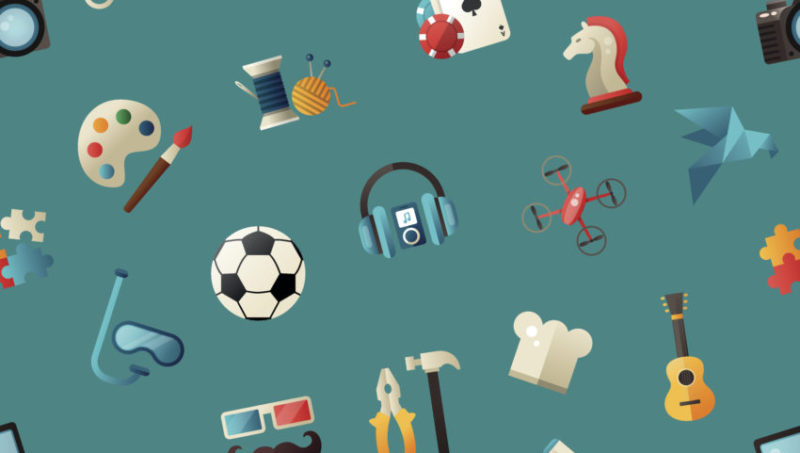

Definição
Hobby é uma palavra inglesa frequentemente usada na língua portuguesa e significa passatempo, ou seja, uma atividade que é praticada por prazer nos tempos livres. Um hobby não é uma ocupação a tempo inteiro, e tem como objetivo o relaxamento do praticante.
Normalmente, a prática de um hobby não implica vantagem financeira para a pessoa em questão.